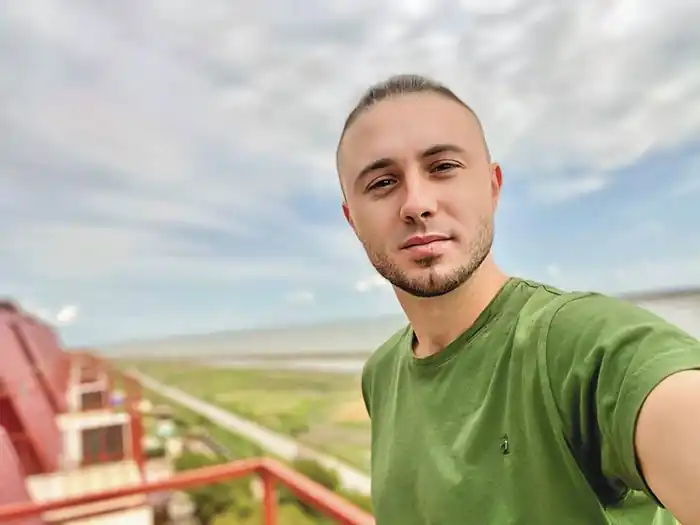
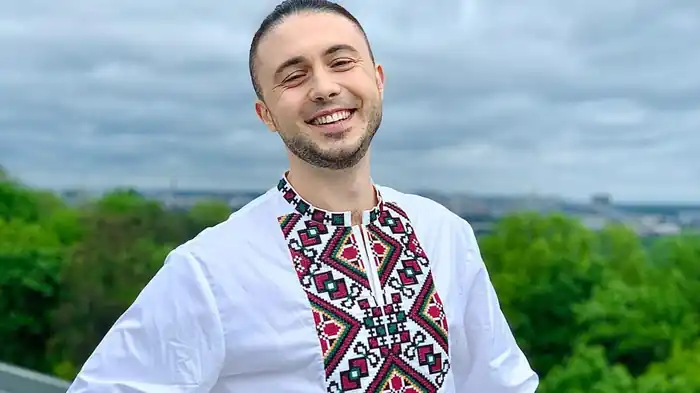
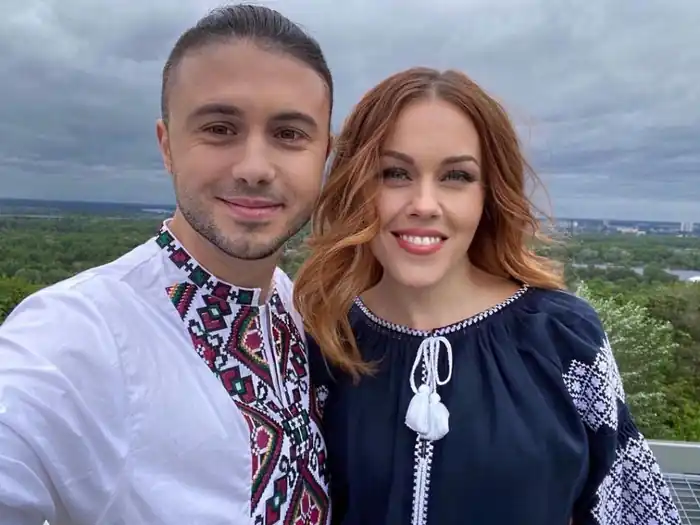
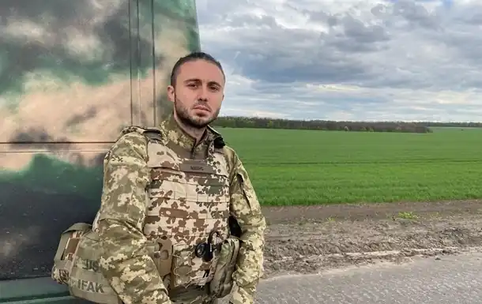

Тополя Тарас Володимирович — соліст популярного українського гурту "Антитіла", речник Молодіжної Ради при Президентові України, колишній молодіжний посол UNICEF в Україні, співзасновник благодійного фонду "Вільні — ЮА", благодійного фонду "Антитіла", волонтер, доброволець Сил територіальної оборони Збройних Сил України.
Народився 21 червня 1987року в Києві. З 6 років почав займатися музикою, зокрема грою на скрипці, співав в хорі при чоловічій хоровій капелі імені Ревуцького. Навчався у столичній гімназії № 48 на вул. Прорізній та у школі І — III ступенів № 8. У старших класах школи створив гурт, який пізніше переформатували й назвали "Антитіла".
Навчався в Академії МВСУ. У 2007 році здобув вищу юридичну освіту. Під час навчання в академії він та "Антитіла" взяли участь у телепроєкті "Шанс". Тоді гурт не переміг, але Кузьма Скрябін сказав: "Якщо цих хлопців випустити на сцену, то багато хто піде на пенсію". 2008 року гурт почав співпрацю з продюсерським центром "Catapult Music". У 2010 прийняття рішення про відхід від продюсерського центру. З того часу менеджментом гурту займається клавішник гурту Антитіла Сергій Вусик і Тарас Тополя. 2013 року одружився зі співачкою Оленою Тополею, яка більш відома як Alyosha. Разом виховують трьох дітей: синів Марка та Романа, дочку Марію. 2014 року з друзями розпочав волонтерську діяльність, заснував благодійний Фонд "Вільні ЮА". Завдяки фонду вдалося зібрати більше 8 млн грн. Кошти спрямовано на закупівлю медикаментів та засобів захисту для українських військових, а також на допомогу населенню. В рамках статусу Молодіжного Посла UNICEF в Україні провів більше 100 зустрічей з активною молоддю по всій країні. Ініціював та спільно з волонтерами втілив у життя масштабну виставку "Ukraine Exist" в стінах штаб-квартири ООН В Нью-Йорку. Діяльність продовжується. 2017 року гурт "Антитіла" відіграв масштабний тур "Сонце". Тур охопив близько 50 міст України, одне в Білорусі, сім міст в Америці та одне в Канаді. В Україні це були не лише обласні центри, а й багато районних центрів. Відігравши тур "Сонце", "Антитіла" потрапили до Національного реєстру рекордів України, установивши досягнення в категорії "Найбільша кількість міст, у яких відбулися концерти музичного колективу в рамках одного туру". За сто один день колектив ознайомив із платівкою чотири країни: Україну, Білорусь, США та Канаду. Виконавці влаштували 46 концертів, 26 із яких припали на березень. На концерті пам'яті Скрябіна переспівав його хіт "Люди, як кораблі". Версія пісні вразила слухачів і Тарас з гуртом записав студійну версію разом з бек-вокалісткою Скрябіна Ольгою (Шпрот) Лізгуновою. Випустив альбоми "Будувуду", "Вибирай", "Над полюсами", "Все красиво", "Сонце", "Hello", "MLNL". Саундтреки до фільмів і серіалів: Після вторгнення російських військ в Україну 24 лютого 2022 року Тарас Тополя разом з іншими учасниками гурту "Антитіла" записався до лав Територіальної оборони ЗСУ. З березня 2022 року Тарас став засновником Благодійного фонду "Антітила", що займався допомогою цівільних та військових підрозділів на війні.